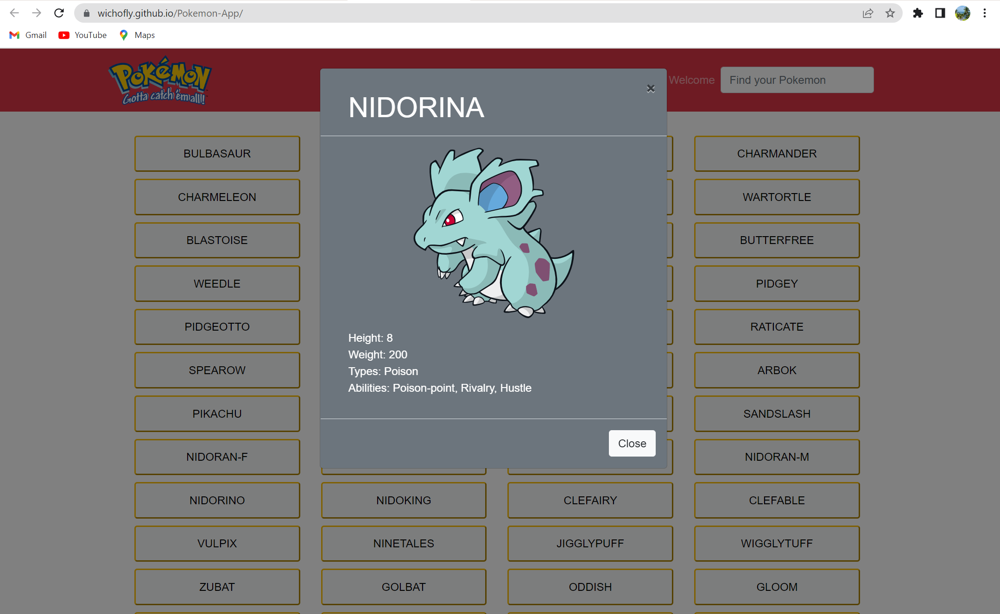
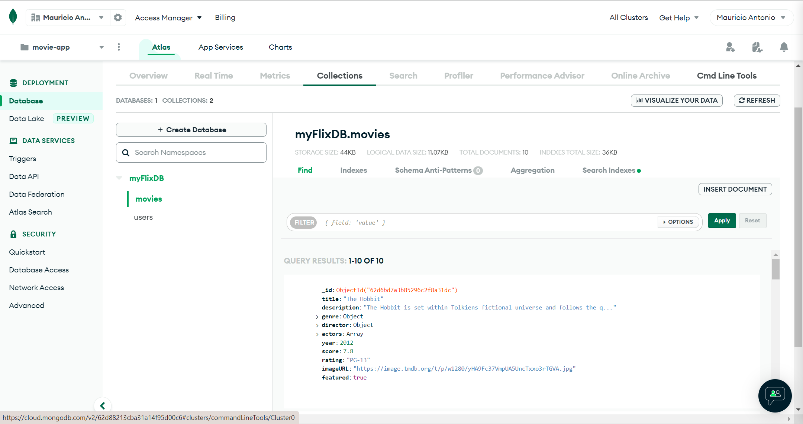
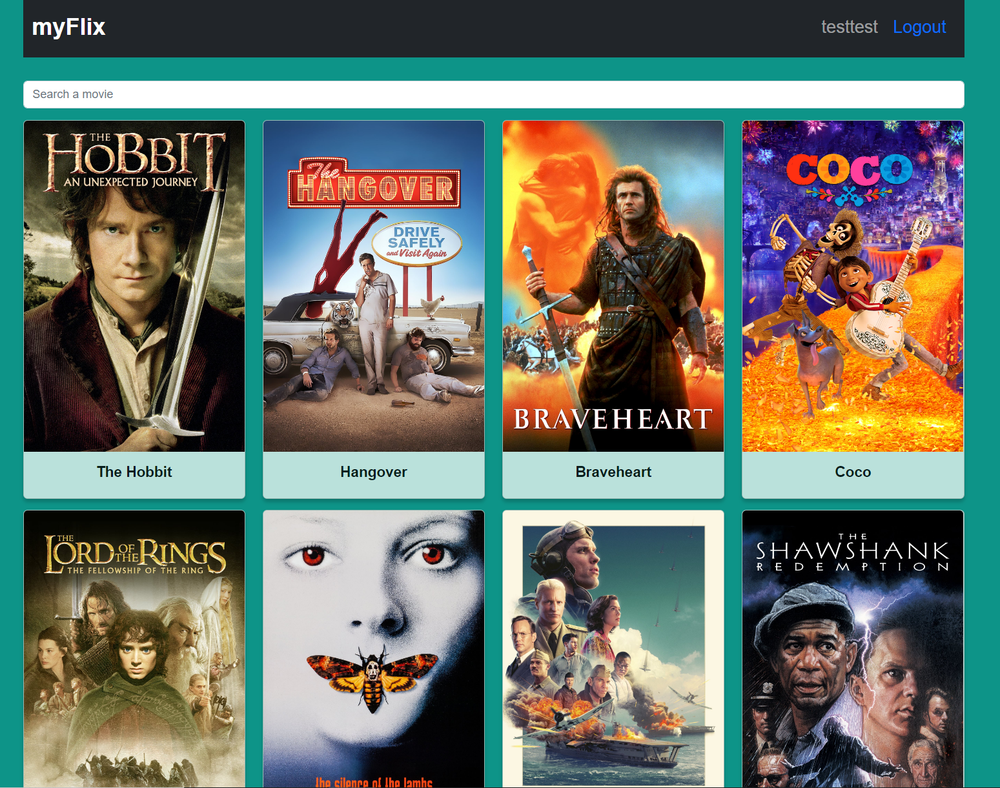
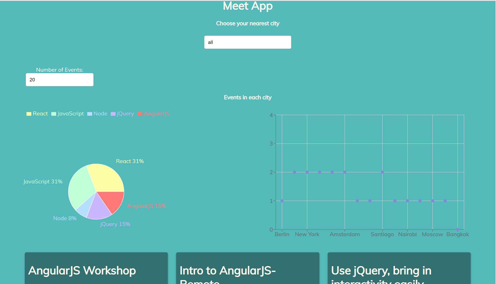
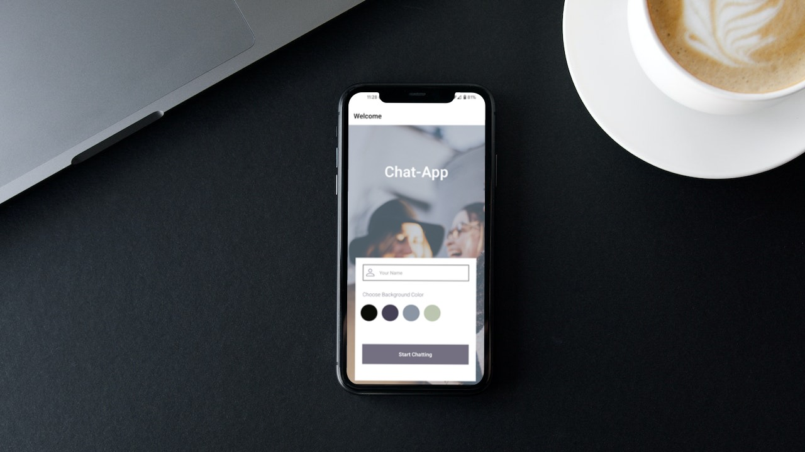

Work
Pokedex App
This is a Web application with HTML, CSS, and JavaScript that loads data from an external API and enables the viewing of data points in detail. I used an API to get the Pokemon information to show to the users. When you enter the page, you will find the names of the 151 pokemon. When you click on a name, a modal will appear showing the pokemon's image, height, weight, type, and skills. This information is obtained by the API


Movie API
This project is all about the backend, or server-side of the development process. I used JavaScript, Node.js, and Express to create an API that can communicate between an app and a database, as well MongoDB to create my own non-relational database to go with it.


myFlix
In this project I created the client-side using React from my movie-api database. In it you can register as a user and navigate through the app. You can add movies to your favorites list as well as remove them, search for a movie and update your user. The app shows you important information about each movie when you click on it. By this project, I complete a web application (client-side and server-side moovie-api) known as MERN (MongoDB, Express, React and Node.js).


Meet App
This is a Serverless, Progressive Web Application (APP) with React, using software development testing methods (TDD and BDD) to shape the code. The App displays a list of upcoming events in many cities and time of the user's choice. It is also available for users to use when they are offline.

Chat-app
This is a native mobile app built using React Native and developed with Expo that allows users to enter a chat room, send messages, images, and their location. It is optimized for iOS and Android. Users can authenticate anonymously using Google Firebase authentication. Google Firestore Database is used to set up a real-time database. Messages are also stored locally on the user's mobile device via Async Storage, allowing users to access their messages offline.


Angular myFlix

In this project I created the client-side using Angular from my movie-api database. In it you can register as a user and navigate through the app. You can add movies to your favorites list as well as remove them, and update your user. The app shows you important information about each movie when you click on it. By this project, I complete a web application (client-side and server-side moovie-api) known as MEAN (MongoDB, Express, Angular and Node.js).